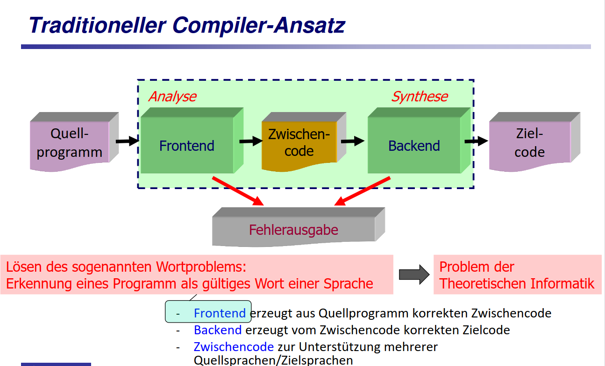
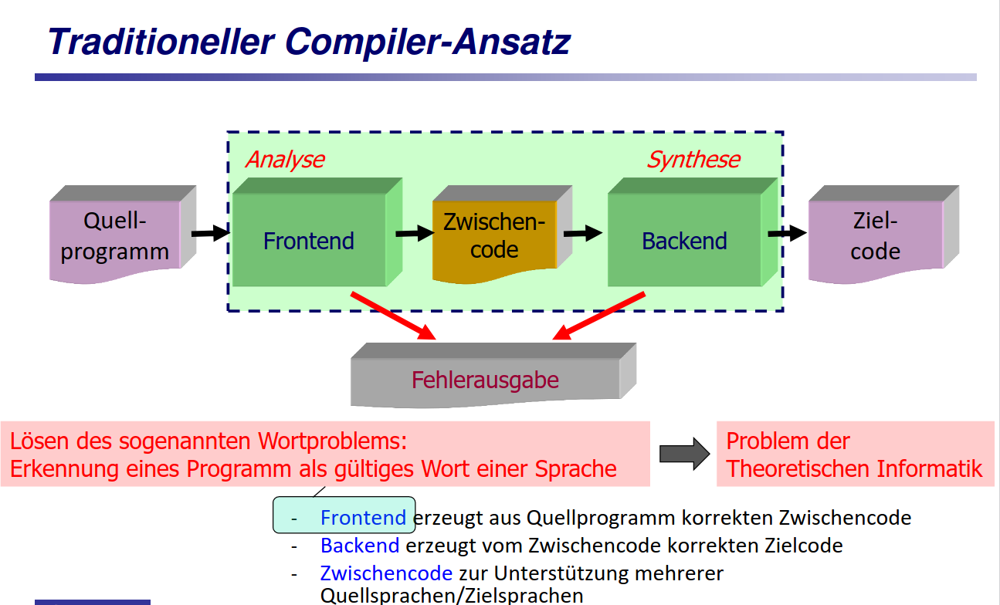

Kapitel:
Was ist ein Compiler?
Compilationsprozess
Formalismen zur Sprachbeschreibung
Lexikalische Analyse: Der Scanner
Syntaktische Analyse: Der Parser
Statische Semantikanalyse
Laufzeitsystem
Was ist ein Compiler?
Definition Compiler
Ein Compiler ist
ein Computerprogramm, das ein (anderes) Programm,
das in einer bestimmten Programmiersprache geschrieben ist,
in eine bestimmte Form so überführt wird,
die von einem Computer ausgeführt werden kann:
- eine Assemblersprache
- maschinell ausführbare Maschinensprache
- Bytecode überführen
Ein Compiler, der
den Quellcode einer Hochsprache in den Quellcode einer
anderen Hochsprache übersetzt,
wird als Transcompiler bezeichnet (Beispiel: Pascal -> C)
Compilationsprozess
 

Formalismen zur Sprachbeschreibung
Lexikalische Analyse: Der Scanner

Syntaktische Analyse: Der Parser
Ein Parser ist ein Computerprogramm, das in der Informatik für die Zerlegung und Umwandlung einer Eingabe in ein für
die Weiterverarbeitung geeigneteres Format zuständig ist. Häufig werden Parser eingesetzt, um im Anschluss an den
Analysevorgang die Semantik der Eingabe zu erschließen und daraufhin Aktionen durchzuführen.

Statische Semantikanalyse
Laufzeitsystem